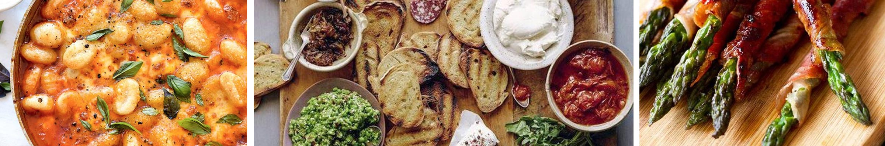

Gegrilde kebab
Ingrediënten
1 pompoen ((900 g), schoongeboend)
6 el olijfolie
1 bakje platte peterselie ((20 g), fijngesneden)
400 g lamsgehakt
1 blikje tomatenpuree (70 g)
1 teen knoflook (fijngesneden)
1 ui (gesnipperd)
1 bakje koriander ((15 g), fijngesneden)
½ bakje munt ((a 15 g), fijngesneden)
1 tl paprikapoeder (pikant)
1 bakje pistachenoten ((95 g), fijngehakt)
Beschrijving
1. Snijd de pompoen in parten. Verwijder de zaden en de draderige binnenkant en snijd met een scherp mes de schil er af. Snijd de pompoen in dunne plakjes. Verdeel over een met bakpapier beklede bakplaat. Besprenkel met 2 el olie en bestrooi met peper en zout.
2. Zet de ovengrill aan. Meng 4 el olie met de helft van de peterselie, het gehakt, de tomatenpuree, knoflook, ui, koriander, munt, paprikapoeder, pistachenoten, peper en zout. Gril de pompoen ca. 5 min. Verdeel het gehakt in 8 porties en rijg het aan de satéprikkers. Leg de kebab bij de pompoen en gril ca. 6-8 min. Keer regelmatig.
3. Verdeel de kebab en pompoen over 4 borden en bestrooi met de rest van de peterselie.
Tip:
Is er geen lamsgehakt verkrijgbaar? U kunt voor de kebab ook 400 g rundergehakt gebruiken.